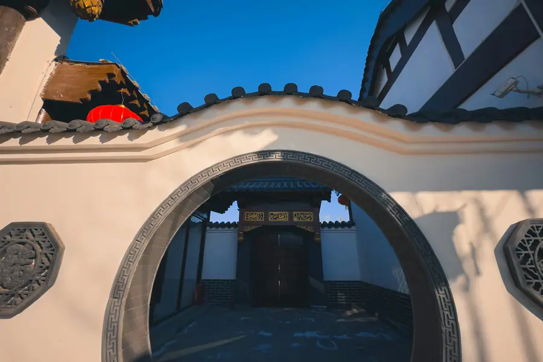
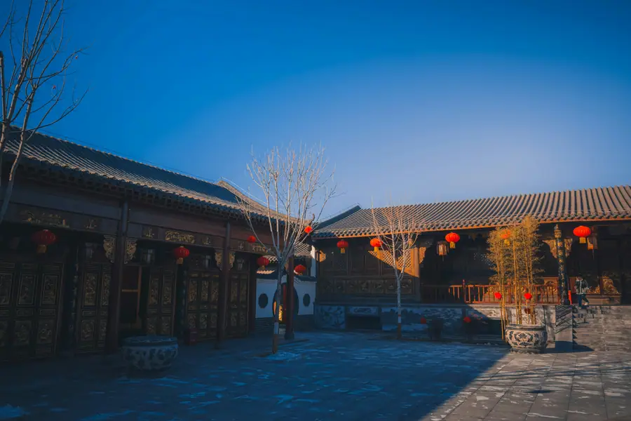
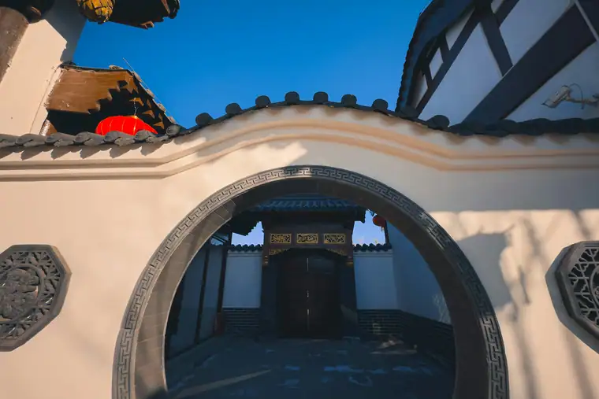

Chat on WhatsApp

Scan the QR code with WhatsApp to add us and start chatting.
Or add us directly: +86-155-2777-1775
Open WhatsAppShijiazhuang (SJW) or Beijing Capital (PEK) airport transfers to Handan, Zhao Kingdom cultural tours, Guoliang Tunnel excursions, and Hebei car service with licensed professional driver. Fixed price.
Real scenes from Handan — landmarks, streets and everyday life.



An ancient capital of the Warring States Period in southern Hebei Province - famous as the capital of the Zhao Kingdom (赵国), home to legendary martial arts heritage, and the gateway to dramatic Taihang Mountain villages.
The name "Handan" (邯郸) is one of the oldest and most poetic in China - it literally means "at the foot of Mount Han" (邺山). The city has been continuously inhabited for over 3,000 years and was the capital of the Zhao Kingdom (赵国) during the Warring States Period (403-228 BCE). During this period, Handan became one of the most prosperous cities in China, famous for its refined culture, music (the "Handan Tavern" melody was legendary), and martial prowess. The city is also associated with the Zhao Yun (赵云), legendary general of the Three Kingdoms.
Handan is one of China most historically significant cities as the Zhao Kingdom capital. The period of Zhao rule produced the famous Zhao style bronze ritual vessels - some of the finest bronze work of the Warring States period. The city is also famous for martial arts tradition - the Handan leg-locking technique (邯郸学步, literally "learning to walk in Handan") was a legendary martial art. The Northeastern Martial Arts tradition of Hebei has roots in the Handan area. Local festivals celebrate Zhao Kingdom heritage with music, dance, and reenactments.
Handan does not have its own airport. The nearest major airport is Shijiazhuang Zhengding International Airport (SJW), about 340 km away - approximately 3.5-4 hours by road. Handan Airport (HDN) is about 400 km away. Handan is a major railway hub on the Beijing-Guangzhou Railway and Shijiazhuang-Handan Railway corridors, with high-speed trains to Beijing (1.5 hours), Shijiazhuang (45 minutes), and many other destinations.
Handan is located in southern Hebei Province, on the eastern edge of the Taihang Mountains (太行山). The city sprawls across the Taihang alluvial plain, with the Taihang Mountains rising to the west and the North China Plain stretching to the east. The famous Guoliang Tunnel (郭亮洞) - a dramatic road carved through a mountain cliff - is about 150 km west of Handan city in the Taihang Mountains. The climate is temperate continental - hot humid summers and cold dry winters.
From Warring States Zhao Kingdom heritage to dramatic Taihang Mountain cliff roads and ancient Buddhist temples.
Fixed-price private car service for Handan most popular journeys.
~340 km - 3.5-4 hours - Economy/Business/MPV
Handan has no airport. Your driver meets you at Shijiazhuang Zhengding Airport (SJW) arrival hall and drives you directly to your Handan hotel. The 3.5-4 hour journey through the Hebei plain. The most comfortable option for this long-distance transfer.
~150 km - 3 hours each way - Full day
Drive to the Taihang Mountains to see the Guoliang Tunnel - the famous hand-carved cliff road with windows cut into the cliff face. Your driver continues to Guoliang village at the tunnel end. A dramatic day trip through some of Hebei most scenic mountain terrain.
~20 km - 3-4 hours - City tour
Visit the Zhao Kingdom Memorial (赵王城), Zhao Grove park, and Mount Xiang Buddhist caves. Your driver explains the Warring States history and Zhao Kingdom significance. Best combined with a visit to Zhou Xiao Lane for local food.
~60 km - 3-4 hours - Economy/Business
Visit the Mount Xiang Buddhist cave temples (响堂山石窟) - Northern Qi Dynasty cave art with over 4,000 Buddhist statues. The caves have remarkable acoustic properties and the site has a serene mountain atmosphere. Your driver can combine this with a visit to nearby Yi Village.
Handan is in Hebei, and it is not on our published price list yet — so we quote it for you. Here is exactly how the number is built for your airport pickup at Handan Airport; airport & bus transfers, and what you get for it.
One formula, applied to every city. You get the number in writing before you pay anything — and it is the number that is charged.
Same-day quotes on WhatsApp — we reply between 08:00 and 24:00 Beijing time. The quote is valid for 48 hours, and you can change or cancel free up to 48 hours before pickup.
These are live, published 2026 rates for the cities on our price list. The same formula and the same rules produce your Handan quote — we are simply pricing it for you on request.
| City | 4-seat economy airport transfer | USD |
|---|---|---|
| Guiyang 贵阳市 | ¥164 | ≈ $23.1 |
| Huizhou 惠州市 | ¥229 | ≈ $32.25 |
| Chengdu 成都市 | ¥240 | ≈ $33.8 |
| Shenzhen 深圳市 | ¥273 | ≈ $38.45 |
| Hangzhou 杭州市 | ¥284 | ≈ $40.0 |
| Guangzhou 广州市 | ¥295 | ≈ $41.55 |
| Beijing 北京市 | ¥328 | ≈ $46.2 |
| Shanghai 上海市 | ¥339 | ≈ $47.75 |
Want the full table — every vehicle class, every hour tier, for all 53 published cities? It is one click away, and it is the same sheet our drivers are paid from.
Six things that come with every booking — in Handan and across all 346 cities on the platform.
Registered travel agency L-HUB-101603. The car, the driver and the contract are ours, which is why we can put a fixed number on them.
Everything that normally gets added later — tolls, parking, driver service, the wait at the terminal — is already inside the fare you see.
We monitor your flight live and adjust the pickup automatically. Waiting time because of a delay does not become your cost.
Local knowledge is not a selling point we borrow — it is who we hire. The route between the airport and your hotel is somebody's daily drive.
Change or cancel free right up to 48 hours before your pickup time. No admin charge, no argument.
08:00–24:00 Beijing time on WhatsApp. Ask for a different car, a different route or a different price — you get an answer.
Send us your route and date. You get a written fixed price for every vehicle option, with the inclusions spelled out — then book it in one click and change it free up to 48 hours before pickup.
Handan has no airport but is a major railway hub on the Beijing-Guangzhou corridor with fast HSR connections.
340 km to Handan - 3.5-4 hours by road
SJW (石家庄正定机场) is Hebei main aviation hub with domestic flights across China and some international routes. The drive from SJW to Handan takes 3.5-4 hours via the G4 Beijing-Hong Kong Expressway and G22 Qingdao-Lanzhou Expressway. Our private car is the most comfortable option for this long-distance transfer.
400 km to Handan - 4-4.5 hours by road
Local (北京大兴机场) is useful if arriving on international flights or flights that do not serve SJW. The drive from Beijing Daxing to Handan takes about 4-4.5 hours. Alternatively, take a high-speed train from Beijing to Handan directly - the HSR is faster and more convenient than driving.
Main hub - conventional & HSR
Handan Railway Station (邯郸站) is the main railway station, serving both conventional and high-speed trains. On the Beijing-Guangzhou Railway corridor. High-speed trains to Beijing (1.5 hours), Shijiazhuang (45 min), and many other destinations. Located about 3 km from the city center.
High-speed rail hub
Handan East Station (邯郸东站) is the dedicated high-speed rail station on the Beijing-Guangzhou HSR line. Primarily handles high-speed trains. Fast connections to Beijing (1.5 hours), Shijiazhuang (40 min), and south to Zhengzhou (1.5 hours). Located about 8 km from the city center.
We meet you at the exit with a name board and help with luggage.
Book Station TransferWarring States heritage, hand-carved cliff roads, and ancient Buddhist cave art in southern Hebei.
Best with wide-angle lens
The Guoliang Tunnel windows are the most iconic view - looking out through the cliff-face windows at the valley below. The contrast between the hand-carved stone tunnel and the natural mountain landscape is dramatic. Morning light illuminates the valley through the windows best.
Best in morning light
The ancient earthwork walls of the Zhao Kingdom palace complex are most atmospheric in the early morning when mist hangs over the site. The surviving walls, some 10 meters high, give a sense of the scale of the ancient capital. The adjacent museum has excellent displays of Zhao bronze work.
Best with flash or tripod
The Mount Xiang caves have remarkable acoustic properties and dramatic carved Buddha statues. The cave interiors are dark - bring a flashlight or use your phone torch to illuminate the carved faces. The sound of chanting in the caves is said to echo beautifully - visit when fewer tourists are present.
Best in autumn
Guoliang village at the end of the tunnel has stunning views over the Taihang Mountains. The village is surrounded by dramatic peaks and the terraced farmland creates interesting foreground compositions. The best views are from the village temple platform. Autumn has the clearest air.
Best at dusk
The old commercial street of Zhou Xiao Lane is most atmospheric in the evening when the traditional shopfronts are lit up and food stalls are open. The warm light, street activity, and old architecture create a lively scene. Good for street photography and food photography.
Best anytime
Yi Village has a unique combination of revolutionary-era buildings and traditional northern Chinese village architecture. The contrast between the red-star decorations and the old grey-brick houses is visually interesting. The village is quiet and authentic - less visited than other sites.
Handan signature hand-pulled noodle dish - the name om a visiting scholar who was so impressed by local noodle-pulling technique he tried to learn it. The noodles are stretched and "pulled" into flat strips, served with a savory tomato and lamb broth. Best at early morning noodle shops in the old city.
Dumplings shaped like the bronze ritual vessels of the Zhao Kingdom - a creative culinary tribute to Handan most famous historical period. The dumplings are typically filled with lamb and cabbage - the traditional northern Chinese filling. Available at specialty restaurants in the city center.
Handan and southern Hebei have excellent free-range chicken raised on the Taihang Mountain slopes. The chicken is typically braised with ginger, scallion, and soy sauce - the meat is firm and flavorful. Best at family-run restaurants near the Guoliang Tunnel road.
The Taihang Mountains near Handan produce excellent wild mushrooms in the autumn months - shiitake, oyster mushrooms, and wild matsutake from the forest. Stir-fried with garlic and scallion or cooked in a clear soup, the mushrooms have a depth of flavor not found in cultivated varieties. Best at mountain village restaurants.
Southern Hebei is a major millet-producing region and Handan millet congee is a daily breakfast staple. The congee is typically made with aged millet (小米) and served with pickles or steamed bread. Available at morning markets and breakfast shops throughout the city.
The evening market along Zhou Xiao Lane (滏西街) and the surrounding old city area has food stalls, local crafts, and daily goods. Open from around 5 PM until late. The best place for street food and evening atmosphere in Handan.
The main wholesale market in Handan has local products including dried mushrooms from the Taihang Mountains, local grain products, and regional specialties. Useful for buying in bulk. Your driver can help navigate and translate.
Small replicas of Zhao Kingdom bronze ritual vessels (青铜器) are popular souvenirs. Available at the Zhao Kingdom Memorial museum shop and craft shops in the city. The quality and price vary - the museum shop has the most authentic versions.
Dried wild mushrooms from the Taihang Mountains - particularly the high-quality shiitake grown on the mountain slopes. Available at the Hebei Provincial Products Market and specialty food shops. Lightweight and keep well for travel.
High-quality millet, proso millet, and grain products from the Handan area are available at markets and specialty shops. The mineral-rich soil of the Taihang alluvial plain produces distinctive-tasting grain. Vacuum-sealed bags are best for travel.
Warring States medical traditions, Taihang Mountain herbal medicine, and martial arts healing practices of southern Hebei.
The Zhao Kingdom period in Handan was a time of significant philosophical and medical development. The period saw the convergence of Central Plains medical traditions with northern nomadic practices as the Zhao Kingdom incorporated "Hu d with the Zhao period - including forms of early martial arts practice - are referenced in the development of Chinese health exercises (导引术).
The Zhao Grove park has displays of Zhao Dynasty health and martial arts traditions.
The Taihang Mountains west of Handan produce distinctive medicinal herbs. from the Taihang area is considered high quality - used as a gentle energy tonic. grown in the alluvial plain is used for immune support. from the region is used for digestive health. The high altitude and clean air of the Taihang Mountains produce high-quality herbs.
Available at Handan TCM pharmacies and the provincial products market.
Handan and southern Hebei have a strong martial arts tradition with associated health practices. The "learning to walk in Handan" legend (邯郸学步) references the legendary martial arts practiced in the city. Traditional martial arts training (武术) in the region has long emphasized health benefits - including bone strength, circulation, and respiratory function. The practice continues in local martial arts schools.
Morning martial arts practice can be observed at Zhao Grove park.
The Taihang Mountains near Handan have clean mountain air beneficial for respiratory health. The high altitude, forest coverage, and low humidity create conditions good for asthma and bronchitis. The Guoliang Tunnel area in particular has a reputation for clean air. Morning walks in the Taihang Mountains are recommended for respiratory wellness.
The best air quality is early morning in the Taihang Mountain area.
Insider tips to help you experience Handan like a local.
Handan has no airport. The 340 km drive from Shijiazhuang Zhengding Airport (SJW) takes 3.5-4 hours. Booking 24 hours ahead ensures your driver is ready for this long-distance pickup. The drive passes through the Hebei plain - request stops if time permits.
The Guoliang Tunnel is very popular with Chinese tourists and the narrow tunnel can get congested on weekends and holidays. Visit on a weekday if possible. The tunnel road is not accessible to large buses - private car is the best way to visit. Arrive early to avoid the tour groups.
The best Handan pulled noodles (邯郸拽面) are at the small shops that open at 6 AM in the old city near Zhou Xiao Lane. Locals line up for the first bowls of the day. Ask your driver to take you to the most popular morning spot - a memorable introduction to the city.
The Zhao Kingdom Memorial (赵王城) is most atmospheric in the early morning when mist hangs over the ancient earthwork walls. Your driver can pick you up at 7:30 AM so you arrive before 9 AM. The museum opens at 9 AM - time your visit to see the bronze artifacts after exploring the outdoor site.
The Mount Xiang Buddhist caves (响堂山石窟) are dark inside - the carved statues and Buddhist figures are only visible by torch or flashlight. Bring your phone torch or ask your driver for a flashlight. The cave acoustics are best experienced in quiet moments between tour groups.
The Zhao Kingdom bronze vessel-shaped dumplings (赵王饺子) at specialty restaurants are a fun and tasty tribute to Handan most famous historical period. Ask your driver to recommend a good restaurant. The lamb and cabbage filling is particularly good at these restaurants.
The climate record of Handan decides when the city is at its most comfortable to walk.
The annual average temperature is 14.3 °C; annual rainfall averages 502 mm; July is the hottest month at 27.3 °C; January the coldest at -0.9 °C; The climate pattern includes The monsoon.
Monthly means in March, April, May run 8–21 °C. Rainfall over those three months totals about 77 mm.
Highlights:
Monthly means in June, July, August run 26–27 °C. Rainfall over those three months totals about 321 mm.
Highlights:
Monthly means in September, October, November run 7–22 °C. Rainfall over those three months totals about 92 mm.
Highlights:
Monthly means in December, January, February run -1–3 °C. Rainfall over those three months totals about 12 mm.
Highlights:
Fixed price, licensed professional driver, free flight tracking. From Shijiazhuang (SJW) or Beijing Capital (PEK) to your Handan hotel, Guoliang Tunnel tour, or Zhao Kingdom heritage sites.
Get Instant QuoteQuestions? WhatsApp +86-155-2777-1775
Scan the QR code with WhatsApp to add us and start chatting.
Or add us directly: +86-155-2777-1775
Open WhatsApp